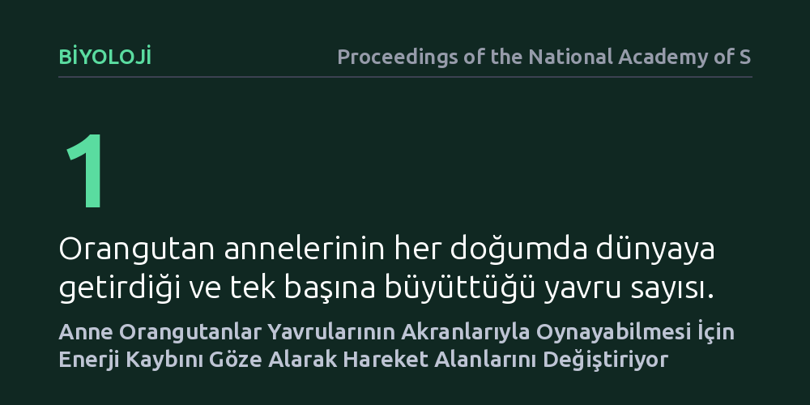

BIYOLOJI · Proceedings of the National Academy of Sciences · 2026-10-24
Araştırmacılar, doğada son derece yalnız yaşayan Borneo orangutanı yavrularının akranlarıyla nasıl oyun oynadığını inceledi. Bulgular, annelerin kendi enerji bütçelerini zorlama pahasına dolaşım rotalarını değiştirerek yavrularına sosyal oyun fırsatları yarattığını gösteriyor.
Ebeveyn fedakarlığının yalnızca besleme veya korumayla sınırlı kalmayıp, yalnız yaşayan türlerde bile yavrunun zihinsel ve sosyal gelişimi için bilinçli enerji harcamayı kapsadığını ortaya koyuyor.

Sosyal oyun, memeli hayvanların yavrularında kas koordinasyonu, sosyal kurallar ve zihinsel esneklik kazanımı için en kritik gelişim evrelerinden biridir. Kalabalık gruplar halinde yaşayan şempanze veya kurt gibi türlerde yavruların oyun arkadaşı bulması gündelik hayatın doğal bir parçasıdır. Ancak büyük insansı maymunlar arasında en yalnız yaşam tarzına sahip olan Borneo orangutanlarında (Pongo pygmaeus wurmbii) durum oldukça karmaşıktır.
Orangutan anneleri, tropikal yağmur ormanlarındaki dağınık meyve kaynakları nedeniyle çoğunlukla tek başlarına dolaşır ve yaklaşık sekiz yıllık aralıklarla sadece bir yavru dünyaya getirir. Türdeşlerinden uzakta, ağaç tepelerinde neredeyse tamamen izole bir çocukluk geçiren bu yavruların, yetişkinlikte hayatta kalmalarını sağlayacak sosyal becerileri nasıl edindiği ve akran oyununa nasıl ulaştığı biyologlar için uzun süredir çözülmeyi bekleyen bir soruydu.
Araştırmacılar bu sorunun yanıtını bulmak için Borneo adasındaki Tuanan koruma alanında yaşayan vahşi orangutan popülasyonunu doğal ortamlarında inceledi. Anne ve yavrulardan oluşan bireyler, gün doğumundan yuva yapma saatine kadar ormanda adım adım izlenerek odak gözlem yöntemiyle kayıt altına alındı.
Çalışmada annelerin günlük yer değiştirme mesafeleri, GPS koordinatları, beslenme süreleri ve diğer anne-yavru çiftleriyle karşılaşma sıklıkları haritalandı. Elde edilen hareket verileri ve bireyler arası sosyal temaslar, iki yönlü ağ ilişkilerini analiz eden istatistiksel modellerle değerlendirilerek karşılaşmaların rastlantısal mı yoksa hedefe yönelik bir strateji mi olduğu test edildi.
Elde edilen bulgular, anne orangutanların rotalarını rastgele çizmediğini gösterdi. Anneler, çevrelerinde oyun çağında yavrusu olan başka bir anne bulunduğunda, olağan hareket alanlarının dışına çıkarak bu bireylerle bir araya gelmeyi tercih ediyordu. Bu buluşmalar gerçekleştiğinde yavruların hemen birbiriyle güreştiği, ağaç dallarında kovalamaca oynadığı ve yoğun bir sosyal etkileşime girdiği gözlendi.
Ancak bu sosyal buluşmalar anneler için bedelsiz değildi. Başka bir anneyle bir araya gelmek, sınırlı meyve ağaçlarını paylaşmak ve daha uzun mesafeler katetmek anlamına geliyordu. Analizler, annelerin yavrularına oyun ortamı sağlayabilmek uğruna belirgin bir metabolik ve enerjisel maliyeti göze aldıklarını, yani kendi enerji bütçelerinden fedakarlık yaptıklarını ortaya koydu.
Bu çalışma, evrimsel biyolojideki ebeveyn yatırımı kavramına yeni bir boyut kazandırıyor. Geleneksel olarak memelilerde ebeveyn emeği süt üretimi, taşıma ve yırtıcılardan koruma gibi doğrudan hayatta kalma unsurlarıyla ölçülürdü. Bu bulgular ise annelerin yavrularının zihinsel ve sosyal sermayesi için de aktif olarak hareket rotalarını değiştirdiğini ve enerji harcadığını belgeliyor.
Doğanın en yalnız yaşayan büyük maymununda dahi annelerin yavrularının oyun ihtiyacı için böylesi bir maliyeti üstlenmesi, oyunun ve akran etkileşiminin primat evrimindeki vazgeçilmez önemini açıkça ortaya koyuyor. Yalnız bir yaşam biçimi sürdürülse bile, yeni neslin sağlıklı gelişimi fedakarlıkla planlanan bu geçici buluşmalara dayanıyor.